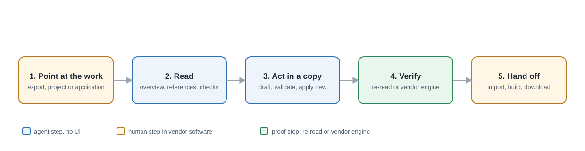
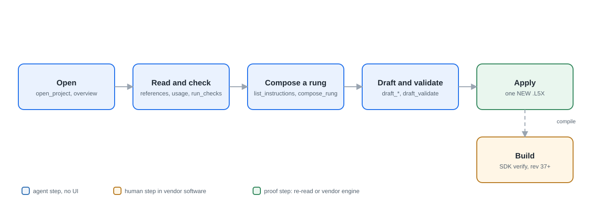
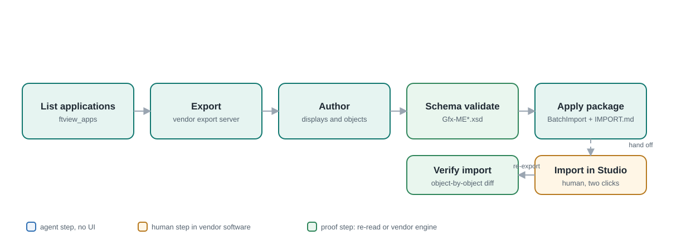
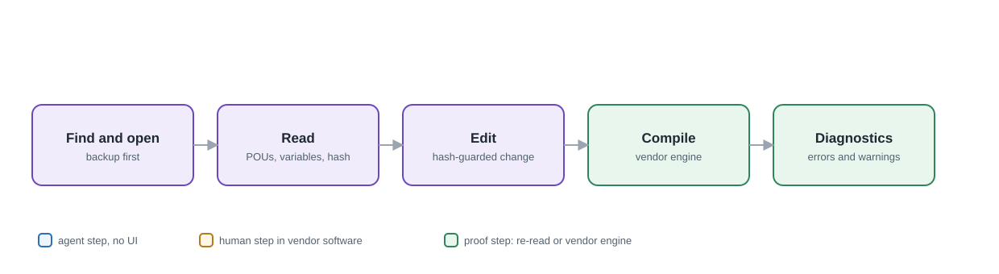
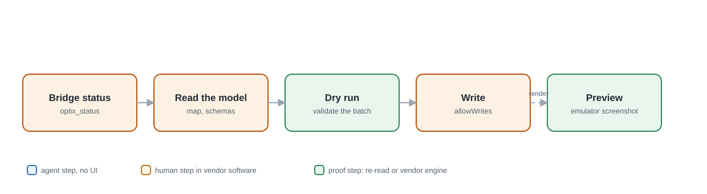

How the four engineering surfaces work, what the agent does, what stays with you, and
what each result can and cannot prove.
Version 0.8.2 · 2026-10-27 · @aryacode/dsh-engineering
What this handbook covers
One install adds four products to AryaCode: Studio 5000 L5X, FactoryTalk View ME, MotionWorks IEC and FactoryTalk Optix. Each is a row you can switch off, and each registers a skill and tools. You never call a tool by name: you say what you want, and the agent selects the surface.
Product
Without vendor software
Needs for the rest
Studio 5000 L5X
Node only for reads and drafts
Studio 5000 + SDK for builds; controller for online
FactoryTalk View ME
Node only to read an export
ME Studio to export an application and to import changes
MotionWorks IEC
Node only for saved files
MotionWorks IEC 3 Pro running for edits and compile
FactoryTalk Optix
—
Optix Studio open with the bridge attached
The loop every product follows
Four products, one discipline: read before writing, act in a copy, prove the result with the vendor engine, and hand off the step only a person can perform.

Figure — The loop every product follows
The five steps
Point at the work — a workspace folder holding an export or project, or an installed FactoryTalk View ME application name.
Read — overview, structure, references and checks. The agent quotes what it read before it changes anything.
Act in a copy — L5X and FactoryTalk View write a new file or folder; MotionWorks edits the saved project after a verified backup.
Verify — re-read the written file, or let the vendor engine judge: an SDK build, an ME re-export, an MWI compile, an emulator preview.
Hand off — importing displays in Studio, creating a runtime file, downloading to a controller or terminal. These are named, not implied.
Studio 5000 L5X
An offline export is the unit of work. Logic is reviewed and changed offline; a build and a controller download are separate, supervised steps.

Figure — Studio 5000 L5X
The agent does
Opens the `.L5X` and reports programs, routines, tags, tasks and counts.
Follows symbols, resolves aliases and members, maps bit and array usage, and runs the structural checks with findings and severities.
Composes ladder from an instruction catalog (`list_instructions`, `compose_rung`) so an invalid rung cannot reach a draft, then validates the whole draft.
Writes one new `.L5X` and leaves the source untouched; with Studio 5000 and the SDK it can build the result at project revision 37 or later.
You do
Import the new `.L5X` into Studio 5000 if you want it in a project.
Download to a controller. Any download is approval-gated and only accepts a verification id from a build in the same chat.
What it will not claim
That online logic matches the export, that FBD/SFC semantics were exercised, or that a machine is safe. Coverage fields say so on every result.
FactoryTalk View ME
The agent reaches the installed application itself, authors screens against the vendor schema, and proves the Studio import object by object.

Figure — FactoryTalk View ME
The agent does
Lists the ME applications on the host and exports one to a new folder through the vendor export server, with no Studio window and no project change.
Authors displays and objects — geometry, captions, states and tag connections — on a source-positioned tree, so untouched objects keep their exact bytes.
Validates every changed display against the installed `Gfx-ME*.xsd`; apply refuses a document the schema rejects.
Writes the changed displays, `IMPORT.md` and the vendor's own `BatchImport_.xml`, then re-exports after the import and compares trees to prove what landed.
You do
Import the listed displays in FactoryTalk View Studio. Create the runtime application (`.mer`) and download it to the terminal.
What it will not claim
That an import happened without the re-export proof, that a `.mer` was built, or that tag bindings were checked when the vendor export carried no HMI tag CSV.
MotionWorks IEC
The IDE stays in the loop. The saved project is edited in place after a verified backup, and the vendor compiler is the verdict.

Figure — MotionWorks IEC
The agent does
Finds workspace projects, opens one with a complete backup under `backups/motionworks/`, and attaches without reloading a project the IDE already has open.
Reads POUs, declarations, tasks and block interfaces, and records the body hash that a change must match.
Applies hash-guarded code and declaration edits, compiles, and reads the vendor diagnostics.
You do
Keep MotionWorks IEC running. Confirm any close of another open project; that needs the exact path.
What it will not claim
That a compile verdict proves runtime behaviour, or that an edit is safe because it compiled.
FactoryTalk Optix
The Studio bridge is the truth while Studio is open. Batches are validated dry first, then written, then looked at.

Figure — FactoryTalk Optix
The agent does
Reads the live model — screens, widget types, variable members, CLR types — through the bridge rather than trusting disk files.
Applies typed batches with `dry_run` first, and destructive or write operations only under the row's switches.
Validates expressions, adds translations, reads NetLogic guidance from the pinned snapshot, and drives the emulator preview when one is configured.
You do
Keep Studio open with the project loaded and the bridge attached. Save from Studio when the model is right.
What it will not claim
That a model change was saved, or that a screen renders because the model accepted it.
What proves what
A release claim is only as good as the step that checked it.
Product
Proof the agent can produce
Still yours
Studio 5000 L5X
SDK build at revision 37+, preservation and diff checks